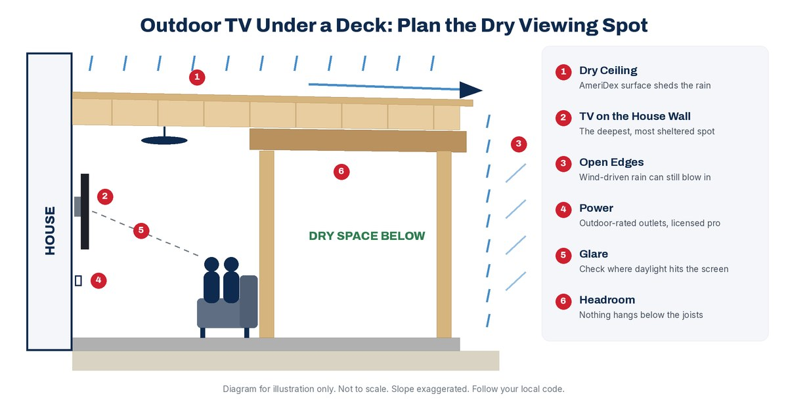

The space under a raised or second-story deck is shaded, close to the kitchen, and already built. Add a TV and a couch and it becomes a spot people actually use. The catch is water: electronics and drips do not mix.
Start with a dry ceiling. Then mount the TV on the most sheltered wall, check the glare at the hour you watch, pick gear rated for outdoor use, and have a licensed electrician plan the power. If the deck above drips, nothing else on this list matters.
Four Things That Decide It
Dry overhead
The deck above has to shed rain, not let it drip through the gaps
Sheltered wall
The house wall, back from the open sides and the drip line
Outdoor-rated gear
TV, mount, and speakers rated for the conditions
Planned power
Outlets and circuits by a licensed electrician, to local code
What Works Against a TV Under a Deck
Drips
A standard deck lets rain fall through the board gaps, right onto the screen and the couch
Wind-driven rain
Open sides let rain blow in sideways, even under a dry ceiling
Glare
Bright daylight from the open sides can wash out the picture
Outdoor air
Humidity, temperature swings, dust, and pollen reach the space below
Standard Deck vs AmeriDex Over a TV Spot
| Standard gapped deck | AmeriDex deck | |
|---|---|---|
| Rain from above | Drips through the gaps onto the TV and seating | Sheds off the top and past the drip edge |
| Movie night in the rain | Covers on, TV off | A dry space to watch |
| Headroom | Anything hung under the joists takes clear height | Nothing hangs below the joists |
| Ceiling finish | Has to deal with the water first | Optional finish once the space is dry (see ceiling options) |
8 Steps to Set Up the TV Spot
Check each one off as you plan. Your progress saves on this device.
Start with a dry ceiling
A regular deck has gaps between the boards, so rain drips straight through onto whatever sits below. With AmeriDex, the boards lock onto the Dexerdry seal and the deck surface sheds rain off the drip edge. Get the deck right first. See how the system works.
Mount the TV on the most sheltered wall
The house wall under the deck is usually the deepest, most protected spot, farthest from the open sides. Keep the screen and any electronics back from the outer edge, where rain sheds past the drip line.
Check the light at the hour you watch
Daylight from the open sides can wash out a screen. Sit in the spot at game time, look at the wall, and see where the bright light lands before you pick the mount height and angle.
Choose gear rated for outdoor use
Even in a dry space, the air under a deck is outdoor air: humidity, temperature swings, dust, and pollen. Check the TV, mount, and speaker ratings in the manufacturer's instructions before you buy.
Plan power and signal with a licensed electrician
Outdoor outlets, wiring, and any new circuits should be installed by a licensed electrician and meet your local electrical code. Run the cable or network line at the same time, so nothing gets strung later.
Plan the sound
Outdoor-rated speakers mounted near the TV keep the sound where you sit. Think about the neighbors when you pick placement and volume.
Light the space without glare on the screen
Put the brightest lights behind or beside the screen, not across from it, and add dimmers for night games. More ideas in under deck lighting ideas.
Leave headroom for seating and sightlines
Measure the clear height to the lowest beam, not the deck height. With AmeriDex, nothing hangs below the joists, so the space keeps its clear height. See how high a deck should be.
AmeriDex goes in during new construction or a full re-deck on sound framing that already has the right pitch, at least 1/8 inch per foot away from the house. It cannot be added to boards that stay installed, so plan the TV spot and the dry ceiling together. See options for an existing deck.
Do and Don't
Do
- Get the deck above shedding water first
- Mount on the house wall, back from the open sides
- Check the glare at the hour you watch
- Use gear rated for outdoor use
- Have a licensed electrician run the power
Don't
- Hang a TV under a deck that drips
- Mount electronics near the drip line
- Run extension cords across the floor
- Count on board gaps staying tight
- Skip the clear height check
With AmeriDex, the deck boards lock onto the Dexerdry seal, the surface sheds rain off the drip edge, and the area below stays a dry space for the TV, the couch, and the snacks. Nothing hangs below the joists. Open sides can still get wind-driven rain. Read more about dry space decking or browse more under-deck living space ideas.
Frequently Asked Questions
Can you put a TV under a deck?
Yes, if the space below stays dry. A standard deck lets rain drip through the gaps between the boards, which is hard on electronics. With AmeriDex, the deck surface sheds rain off the drip edge, so the space below is a dry space. Mount the TV on the most sheltered wall and have a licensed electrician handle the power.
Do I need an outdoor-rated TV under a covered deck?
Check the manufacturer's instructions for your TV. The space under a deck is still outdoor air, with humidity, temperature swings, and dust, even when it stays dry. Many people choose a TV, mount, and speakers rated for outdoor use.
Where should I mount a TV under a deck?
Usually on the house wall, the deepest and most sheltered spot, away from the open sides where wind-driven rain can blow in. Check where daylight hits the wall at the hour you watch to avoid glare.
Will wind-driven rain reach the TV?
The deck overhead sheds rain off the top, but open sides can still let wind-driven rain blow in, and rain sheds past the outer drip edge. Keep the TV and electronics back from the open edges.
Can AmeriDex be added to my existing deck?
No. AmeriDex is for new decks and full re-decks on sound framing that already has the right pitch, at least 1/8 inch per foot away from the house. It cannot be added to boards that stay installed.
Ready to Plan Your Outdoor TV Spot?
Find a local dealer, start a free quote with your deck size and how you want to use the space below, or request free samples to see the boards and the seal up close. Always follow your local code.